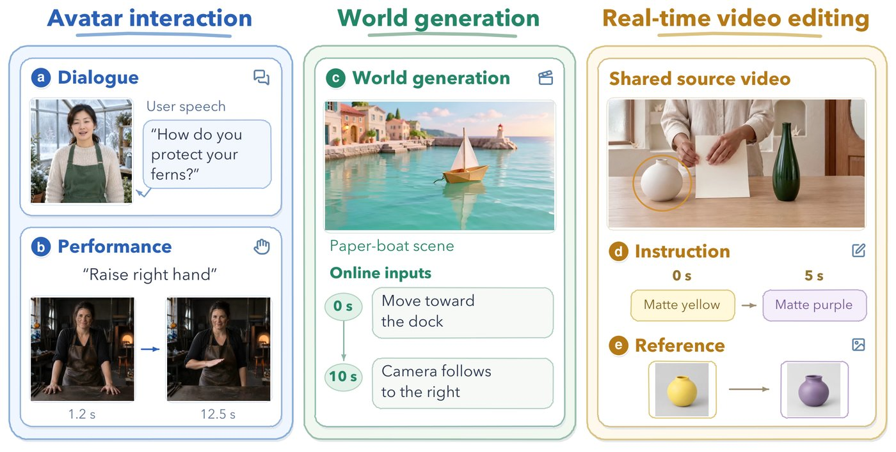

Instead of judging a street performer from a photo, you shout requests at set times during the show: "juggle three balls now", "drop one at thirty seconds". Then you check both that each request happened and that nothing else fell apart along the way.
거리 공연자를 사진 한 장으로 평가하는 대신, 공연 중에 정해진 시각마다 요청을 외친다. "지금 공 세 개로 저글링", "30초에 하나 내려놓기" 같은 식이다. 그리고 요청마다 실제로 해냈는지, 그러는 동안 다른 것은 무너지지 않았는지를 함께 확인한다.
How it works: a test is a session, not a clip작동 방식은 클립이 아니라 세션 단위의 시험
Every case is a timeline: a starting asset, requests that arrive at fixed seconds, and an oracle saying what to establish, keep, cancel, or restore. World generation sits beside avatars and live editing.
모든 시험은 하나의 시간표다. 시작 자료가 있고, 정해진 초에 요청이 도착하며, 무엇을 만들고 유지하고 취소하고 되돌릴지 정답표가 정해 둔다. 월드 생성은 아바타, 실시간 편집과 나란히 놓인다.

- Script the sessions.세션 대본 작성.60 cases per task, 12 at each of 15, 30, 60, 120, and 300 s, with 1,347 planned online events in total.과제당 60개, 15·30·60·120·300초에 12개씩이고, 계획된 온라인 이벤트는 모두 1,347개다.
- Stream the inputs.입력을 흘려보내기.A scheduler releases each request on the session clock while editing sources keep moving; every case runs three times per model.스케줄러가 세션 시계에 맞춰 요청을 내보내고 편집할 원본 영상은 계속 흘러간다. 모델마다 시험을 세 번씩 돌린다.
- Judge by rule.규칙으로 채점.VLM judges list defects and outcomes for each 5-second clip, and fixed rules turn them into 0–100 scores; world-generation Overall is the mean of four metrics.VLM 판정자가 5초 클립마다 결함과 결과를 적고, 정해진 규칙이 이를 0~100점으로 바꾼다. 월드 생성 Overall은 지표 네 개의 평균이다.
Key point: pretty is not obedient핵심은 예쁜 것과 말 잘 듣는 것은 다르다는 것
The models with the best-looking worlds sit near the bottom on following controls. On the same 0–100 scale, Following never passes 26 for any world model.
가장 보기 좋은 세계를 만드는 모델이 제어를 따르는 데서는 바닥 근처에 있다. 같은 0~100 척도에서 어떤 월드 모델도 Following 26점을 넘지 못한다.
Results: no world model wins on every axis결과는 모든 축에서 이기는 월드 모델이 없다는 것
Among 17 world-generation configurations, no model leads more than two of the four metrics, and the best Overall is only 33.4. Self-Forcing, the base of many recent AR recipes, scores 15.5.
월드 생성 구성 17개 가운데 지표 네 개 중 셋 이상에서 1등인 모델은 없고, 가장 높은 Overall도 33.4에 그친다. 최근 여러 AR 학습법의 출발점인 Self-Forcing은 15.5점이다.
| Model | Quality | Stability | Following | Continuity | Overall |
|---|---|---|---|---|---|
| MemFlow | 40.93 | 40.38 | 22.59 | 29.54 | 33.36 |
| Rolling Forcing | 45.19 | 44.47 | 17.78 | 24.61 | 33.01 |
| Krea Realtime | 35.61 | 42.79 | 25.93 | 22.12 | 31.61 |
| HY-World 1.5 | 50.60 | 48.06 | 10.00 | 17.11 | 31.44 |
| HappyOyster 1.0 | 58.34 | 56.67 | 5.56 | 2.78 | 30.84 |
| Matrix-Game 3.5 | 40.43 | 37.86 | 6.67 | 34.50 | 29.87 |
If you build an interactive world model, score request execution and state retention across a session, not clip quality. Here those axes barely move together, so tuning for VBench-style visuals alone will not give you a controllable world.상호작용 월드 모델을 만든다면 클립 화질이 아니라 세션 전체에서 요청을 실행하고 상태를 유지하는지를 채점하자. 여기서는 두 축이 거의 함께 움직이지 않아서, VBench식 화질만 맞추면 제어 가능한 세계가 나오지 않는다.
Every score comes from automated VLM judges, Qwen models wherever the paper names them, while Qwen also drafted the scripts; agreement with humans is left for future work. Despite the real-time framing, latency and throughput are not measured, and the editing tables show only configurations above 5, chosen after evaluation.모든 점수는 자동 VLM 판정자가 매기는데, 논문이 이름을 밝힌 판정자는 대본을 쓴 것과 같은 Qwen 계열이다. 사람 판단과의 일치도는 향후 과제로 남겼다. 실시간을 내세우면서도 지연이나 처리량은 재지 않았고, 편집 표는 평가 뒤에 고른 5점 넘는 구성만 보여 준다.